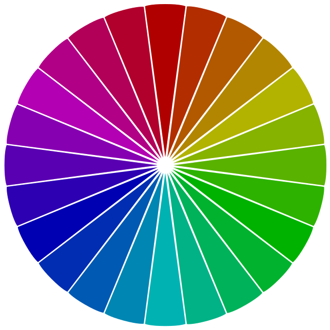

For your webpage, logo or bedroom, you might be scared your color choices don't pass graphics muster. I say if it feels good do it, but for you perfectionists here are steps to a fail-proof color palette.
1. Find a Color Wheel & Stick With It
The best way to guarantee a successful palette is to find or make a color wheel then pick all your colors from it. This will work because all the colors will relate to one another. There are a lot of color wheels to choose from. The differences boil down to a few factors:
Web-optimized vs. Print-optimized
Web-optimized color wheels use the primary colors red, blue and green. They are best for digital devices (computers, watches, game consoles and anything else with an LED screen) because they use the primary colors of light.
Print-optimized color wheels use the primary colors red, blue and yellow (instead of green). They are best for ink, textiles and other tangible materials but are still very popular in digital designs.


If you don't know which kind you have find red then follow your finger to the opposite color. If it's cyan/teal you have a web-optimized color wheel. If it's green you have a print-optimized color wheel.
It's a matter of taste which one you use. Both can work nicely in either medium. In Part 1 and Part 2 of this series we'll use a web-optimized wheel. In Part 3 and Part 4 we'll switch to print-optimized color wheels.
Pure vs. Non-pure
In a pure color wheel the primary colors don't contain traces of any other color. The red is nothing but red (hex value #FF0000). The blue is nothing but blue (hex value #0000FF). The result is a very bright wheel.
Non-pure color wheels have other values added to the primary colors, affecting the colors in between. The whole wheel may have a gray tone, pastel whiteness or some other tint.
I think it's best to use a pure color wheel. You can always add tones and tints later.

Number of Colors
A color wheel can have as few as three colors or as many as 3,000. Too few colors is not very exciting but too many are hard to tell apart. I like a color wheel with 24 colors.
For the rest of this tutorial we'll use a web-optimized pure color wheel with 24 colors (see below).
2. Pick a Base Color
Now that you have a color wheel you can begin. A quick way to make decisions about your color palette is to pick a base color as a springboard. Choose any base color now, whatever strikes your fancy. I'm choosing golden-yellow, third from the top red.
A quick way to start a project is to pick a base color as a springboard to your palette.
2. Apply a Color Scheme
You're almost done. Apply a color scheme to your base color to get the rest of the palette. For 2-color palettes you can use the complementary scheme. For 3-color palettes choose between triadic, split-complementary, analogous.
Complementary
The complementary color scheme uses two colors, a base color and the color 180 degrees from it.
Rotate the propellor until one of the blades reaches your base color. This shows your complementary palette.
The rest of the color schemes below are for 3-color palettes.
Triadic
The triadic color scheme is fully balanced. It consists of a base color and two colors that are 120 degrees and 240 degrees apart the base.
Wikimedia and YuMe use triadic web palettes.
Rotate the propellor until a the blade reaches your base color. This will give your triadic palette.
Split-Complementary
The split-complementary color scheme has two similar colors and a contrasting one. It uses colors 150 and 210 degrees from the base color. It is vibrant and less expected than the triadic color scheme.
Girls Who Code and Cyone use split-complementary web palettes.
Rotate the propellor until one of the blades reaches your base color. Try all the combinations.
Analogous
The analogous color scheme has three similar colors. It uses colors 30 and 60 degrees from the base color. It is often used for different colors within the same shape or image.
IBM uses analogous palettes in many of its ads.
Rotate the propellor until one of the blades reaches your base color. Try all the combinations.
I liked the colors in the triadic color scheme so I choose that. My base color was golden-yellow (third from top red) so my other colors are violet and teal.
3. Save Your Colors
Use your favorite color picker to get the hex or RGB value of each color. In Mac OS you can use the Digital Color Meter found in Applications -> Utilities. If you don't have a Mac you can download a tool like ColorZilla.
With the Digital Color Meter open, hover over a color to see its R(ed), G(reen), and B(lue) hex values. Here I see my golden yellow is hex value #FFC000.
Then recreate the palette in your favorite graphics program.
Palette recreated in Sketch 3.
4. Tint, Tone, and Shade
Personalize the color palette by playing with tints (white transparencies), tones (gray transparencies) and shades (black transparencies).

My palette shown (l-r): plain, covered in white at 50% opacity, plain, covered in gray at 30% opacity, and covered in black at 20% opacity.
Any one of these makes a great final palette.
5. Make Something!
Use your colors in a logo or web design. Here's a bank logo with my triadic color palette.

Using another triadic palette, I made a web-based tic tac toe game. You can play the game here.
Congratulations. You've mastered 2- and 3-color web palettes! Move on to learn about 4-color web palettes.


Steps to a Fail-Proof Color Palette, Part 1
Steps to a Fail-Proof Color Palette, Part 2